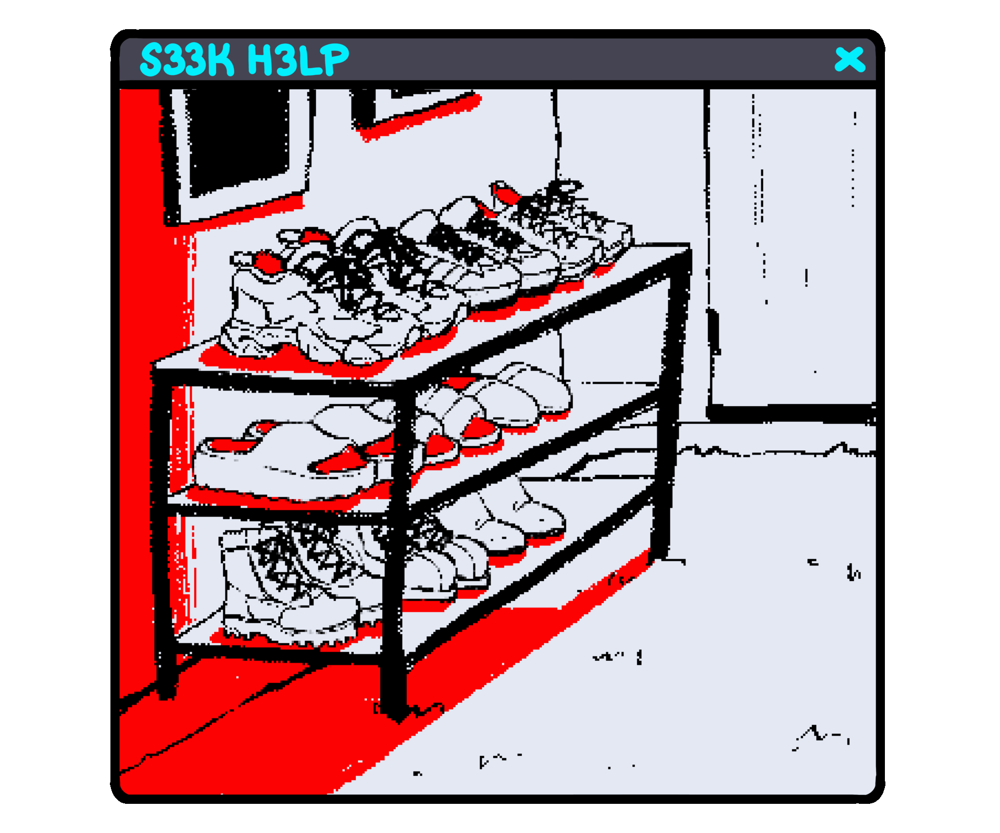
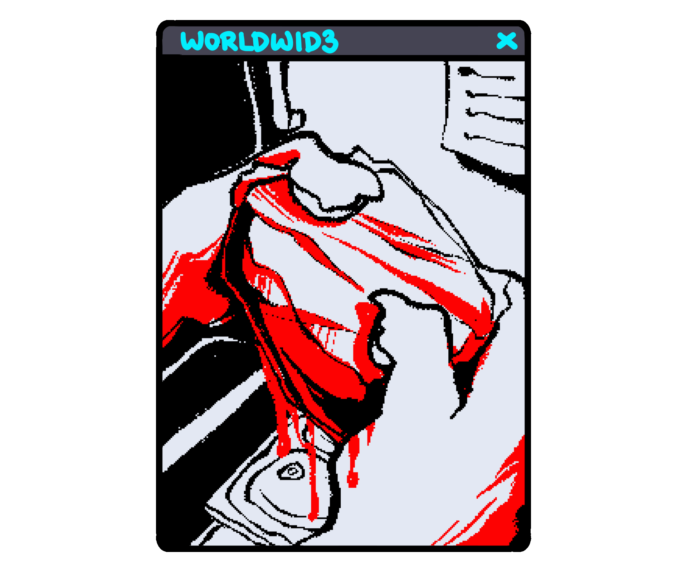
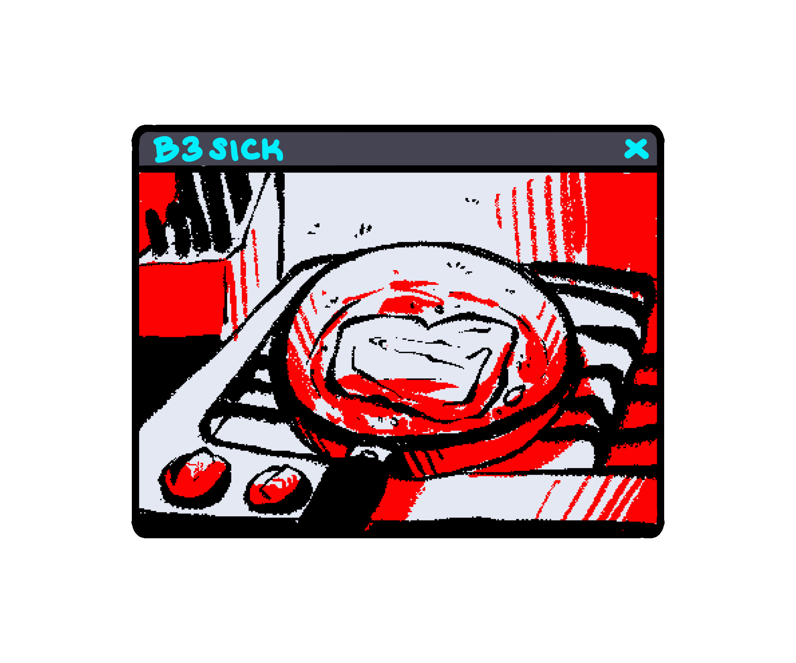

The inside of Cat’s house was clean, almost obsessively so. Sliding off its shoes, it placed them next to all the others in descending size order. The sneakers by the sneakers, the slippers by the slippers, everything had to be in order. The house was eerily silent as Cat walked around, its feet silent against the hardwood floor, not a speck of dust in sight. It wondered what it should eat for lunch.
The fridge had just been restocked, the freezer filled with packaged meat.
Its eyes, illuminated by the light of the refrigerator, scanned for something that sounded good.
The thawed out beef package was cold against Cat’s fur and the fridge closed with a thud.
Everything around Cat felt clinical, like an empty hospital room no one had been in for years.
Though perhaps that was somewhat of an accurate description of its home.
Its house hardly felt lived in, practically untouched in fact.

Anyone who entered might’ve thought they were preparing for an open house.
Cat, however, never really understood the sentiment.
Cutting through the plastic packaging of the beef, Cat felt oddly at ease.
Other than the faint sound of cars in the distance, the house was silent.
Cat’s paw fit perfectly around the knife’s handle. The way the meat unfolded, like the wings of a grotesque butterfly, satisfied Cat as it pulled the blade through. The mallet was heavy as Cat brought it down on, flattening the beef. Moments like these made Cat’s shoulders feel lighter.
It found comfort in the mundane actions of prepping meat.
The beef was wet and soft, as if it could’ve pressed its claws in and felt the blood pumping.
As if it could’ve brought the slice up to its mouth and sunk its teeth in, feel the blood dripping down its chin.
The way the meat sizzled in the hot pan made Cat shiver. The sound was delicious, like Cat could taste it if it tried.
The rich scent of fat melting against metal filled the kitchen. With a click, the stovetop fan was turned on, sucking up the smoke from the meat.
Cat’s paw burned slightly as it held the pan handle.
